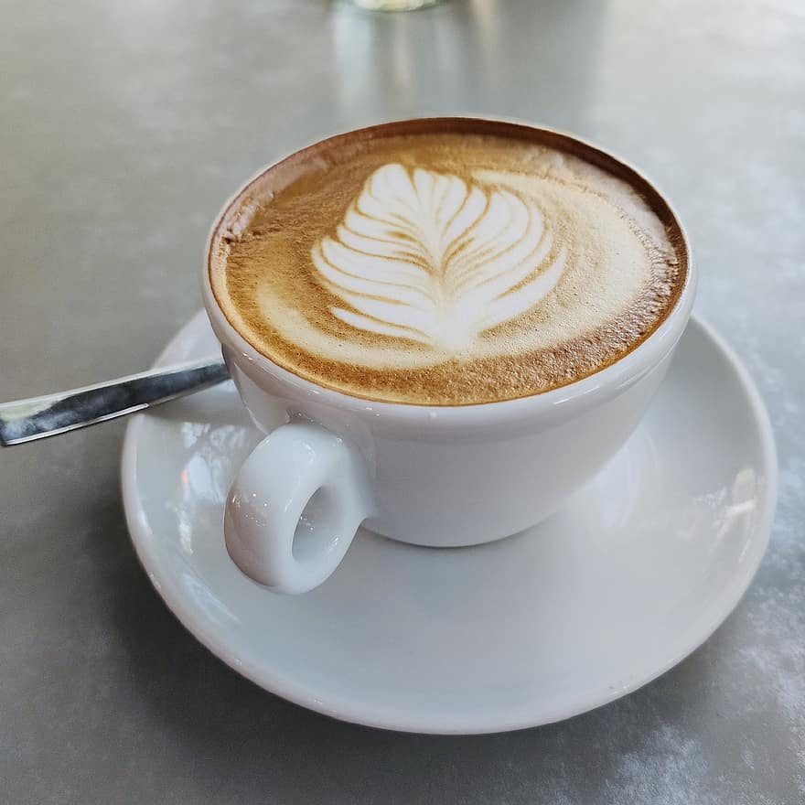

{% extends 'base.html' %}
{% block title_page %}
Рецепт Латте
{% endblock %}
{% block name_of_coffee %}
Латте
{% endblock %}
{% block image_coffee %}

{% endblock %}
{% block ol_recipe %}
Рецепт приготовления:
Взбить молоко.
Приготовить чёрный кофе.
Перелить кофе в бокал для айриш-кофе или керамическую чашку.
Тонкой струйкой влить молоко. При этом жидкости должны смешаться,
а на поверхности – образоваться пенка толщиной около 1 см.
{% endblock %}
{% block table_of_propor %}
| Кофе эспрессо |
Молоко |
| 50 - 60 мл |
100 - 180 мл |
{% endblock %}